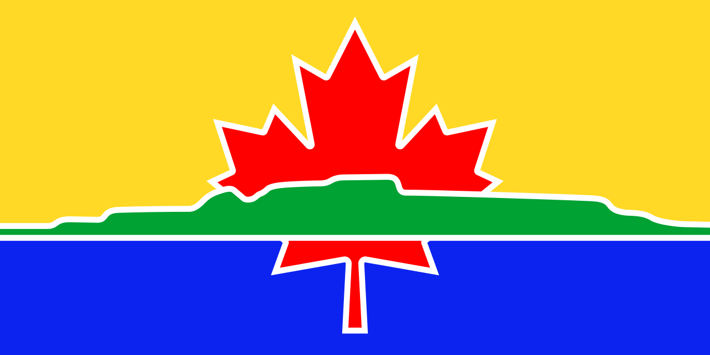

A simple list of websites that were made in beautiful Thunder Bay, Ontario. Why?
Thunder Bay is a great place to call home, and it's full of talented web designers, web developers, programmers, UI and UX designers. The goals are:
To be listed, a website must meet the following criteria:
<a href="https://madeintbay.ca/">Made in Thunder Bay 🇨🇦</a>